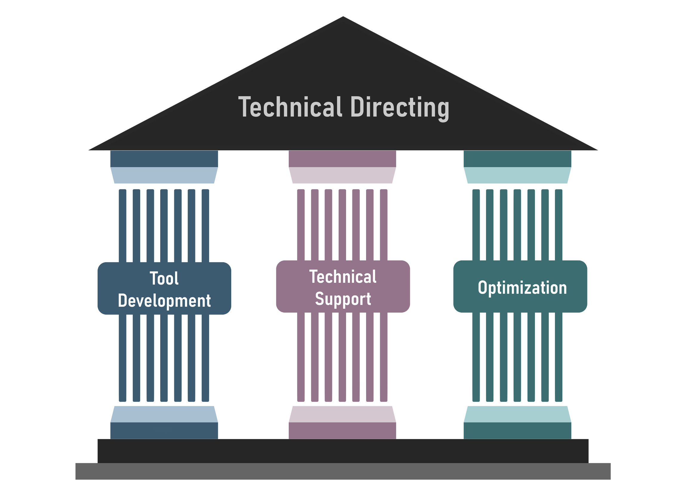

For my final production, I decided to fully embrace the role of a Technical Director, using the opportunity to explore the field and put my technical skills into practice in a production environment.
Overview
I started Production 3 interested in Technical Direction, but I wasn’t sure what the job actually involved. I understood it primarily as solving technical problems, developing tools, and optimizing production pipelines to improve efficiency.
To explore this idea in a school context, I drafted ideas to propose for Production 3 across which my main focus was communicating complex technical concepts clearly to non-technical artists.

Profiler Assistant
For tool development, I chose to explore a Maya Profiler Assistant. Maya's Profiler provides detailed information about what happens during scene evaluation, but interpreting this data can be difficult without technical knowledge. I wanted to investigate whether I could create a tool that would identify the main performance contributors and present them in a way that would help artists understand where a scene was slowing down.
I started by writing a script to extract profiler events, including their names, categories and execution times, and sort them by duration. I then tested this approach on a real, slow Maya scene. However, simply listing the longest events wasn't enough. Many events had generic names that told an artist very little, and individual events didn't necessarily represent the actual cause of a performance problem.
Making sense of the data
This led me to investigate how to group related events, compare their contribution across multiple frames, and distinguish between evaluation and rendering bottlenecks. I also explored how to present the results through a Maya interface, including a chart of the main contributors and ways to identify specific nodes in the scene.
As I worked with real profiler data, I discovered that interpreting it was more complicated than simply finding the events with the longest execution times. For example, Maya performs some operations in parallel, meaning that adding their durations together can give a misleading picture of the actual time spent. I had to reconsider my analysis approach and investigate how to account for overlapping events.
Although I did not complete the full tool, this exploration changed how I approached tool development.
See the Profiler Assistant page for the technical breakdown.
Technical Support
I also provided technical assistance to CG students by visiting their classes and creating a Discord server where they could contact me with questions.
Software for exhibition
One of the clearest examples of this was developing software for a classmate's exhibition. Understanding her artistic intention allowed me to suggest alternative approaches and make technical decisions that supported the experience she wanted to create. However, the solution also developed through her feedback. We tested the software together and adjusted it based on how the comments appeared when projected onto the sculpture.
First-Year Disconnect
However, I did not have the same established relationship with the first-year students. None of them approached me for help. I had assumed that making myself available through class visits and Discord was enough, but they still had to recognize that they had a problem, see me as someone who could help, and feel comfortable approaching someone they barely knew.
How I work best
It also made me notice something about how I work best with other people. When I am physically present in the animation room, I often hear conversations or notice someone struggling and can offer help as the problem emerges.
The first-year students rarely worked there, while I had more opportunities to interact with second- and third-year students in person. Being present while artists work allows me to recognize when someone needs help before they explicitly ask for it.
Workshop
Finally, I conducted a two-part workshop on production efficiency for first- and second-year CG students and collected feedback on its clarity and usefulness.
The workshop feedback challenged my assumption that only new information is useful. The second-year students finding the workshop useful made me reconsider how a clearer explanation, a different perspective, or practical resources can still add value, even when someone already knows a concept.
"I got to learn a lot Of valuable stuff that was mentioned. I Will probably be going back to the presentation a lot. was very insightful."
Did they use it?
However, six out of eleven students had not used any of the resources, and two could not apply anything they had learned to their production. This made me question the relationship between understanding information and actually using it. Good information may not fit a particular production, and changing an established workflow takes effort.
I also realized that my resources favored Maya, Notion, and 3D, reflecting my own expertise and the areas I understand best. While I do not need to support every workflow, I should remain aware of how my expertise shapes the support I provide.
What Changed About My Understanding
While the workshop and technical assistance challenged how I understood communication, other experiences challenged my understanding of efficiency itself.
I had been treating efficiency as inherently positive, focusing on removing repetitive work and solving technical problems. However, my peer’s project showed me that unintended results and mistakes can become artistically meaningful, and that the process itself can contribute to the work’s message. Similarly, a talk about AI tools in animation made me question whether excessive automation could remove experimentation, problem-solving, and discovery.
In short
- Tool: Finding performance bottlenecks isn't just a matter of extracting data. I had to question whether my interpretation of that data was actually reliable and useful to an artist.
- Exhibition: Good technical assistance involves more than solving the technical problem. It means understanding the artistic intention and adapting the solution through collaboration.
- Support: Making support available doesn't automatically make it accessible. Trust and familiarity influence whether someone feels comfortable asking for help.
- Workshop: Information being clear and useful doesn't mean people will apply it. There is a gap between understanding something and incorporating it into their workflow.
- Efficiency: Optimizing a process isn't always the same as improving it. Some unexpected difficulties or mistakes can become part of the creative process, and removing them might also remove something valuable.
What did I learn
Communication isn't delivered
I learned that communication is not something you design and then deliver. It develops through the other person's response.
I went into this production thinking that if I understood the problem, I could prepare the appropriate support and, if I communicated it clearly, the artists would use it. Production 3 kept disrupting this sequence. My tool, workshop, and technical assistance showed me that I cannot predict everything: understanding information is not the same as using it, and my resources work differently for different people. Even when I understand a technical problem, I still need to consider what an artist actually needs to see and understand.
Where the responsibility sits
These experiences made me question how much responsibility I had placed on myself to be clear, accessible, and useful. I had understood that communication involves two people, but I had not fully considered how much the other person's response shapes the communication itself. Making myself available, preparing useful resources, and explaining something clearly are not enough on their own. I also need to understand how the other person responds and what that tells me about the support I provide.
In my praxis, I shouldn't think of myself as a broadcaster, but as a partner in a feedback loop.